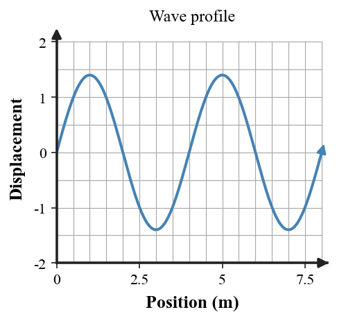

Students will analyze vibrations, waves, and sound by describing wave properties, comparing transverse and longitudinal waves, explaining wave speed, modeling reflection, refraction, interference, resonance, and beats, and using evidence from real-world sound phenomena to explain how waves transfer energy through a medium.
| Rung | I Can Statement | DOK | Level |
|---|---|---|---|
| 8 | I can design, defend, or critique a complete wave or sound model for an unfamiliar situation using diagrams, data, equations, and evidence. | DOK 4 | Above |
| 7 | I can compare competing explanations of wave behavior, sound transmission, resonance, interference, or beats and justify which explanation better fits the evidence. | DOK 4 | Above |
| 6 | I can connect wave diagrams, sound models, data tables, graphs, formulas, and written scenarios to explain wave or sound behavior. | DOK 3 | Essential |
| 5 | I can identify and correct misconceptions about wave speed, frequency, wavelength, sound transmission, Doppler effect, resonance, interference, or beats. | DOK 3 | Essential |
| 4 | I can calculate wave speed, frequency, period, wavelength, echo distance, or beat frequency in simple situations and interpret the answer in context. | DOK 2 | Essential |
| 3 | I can interpret transverse-wave diagrams, longitudinal-wave diagrams, interference diagrams, standing-wave diagrams, and sound-wave models. | DOK 2 | Essential |
| 2 | I can define and recognize key terms such as vibration, wave, amplitude, wavelength, frequency, period, medium, compression, rarefaction, resonance, and interference. | DOK 1 | Essential |
| 1 | I can recognize whether a situation involves vibration, wave motion, sound transmission, reflection, refraction, interference, resonance, or beats. | DOK 1 | Essential |
Format: 3–5 minute warm-up, quick check, image prompt, vocabulary check, mini-whiteboard response, card sort, diagram labeling, or exit ticket
Purpose: Check whether students can recognize basic wave and sound vocabulary, identify wave features, classify wave types, and distinguish vibration, wave motion, sound, interference, resonance, and beats.
The graph shows a wave profile. The horizontal distance from one crest to the next crest is the __________. Mark one such interval on the graph.

Name the repeated back-and-forth motion that can create a wave.
Classify sound traveling through air as a transverse or longitudinal mechanical wave.
Name the crowded region of particles in a longitudinal wave.
Can sound travel through a perfect vacuum? Answer yes or no and give one short reason.
A siren’s pitch changes as an ambulance passes. Name the wave phenomenon.
Which wave property is most directly connected to pitch: frequency or amplitude?
Name the phenomenon in which an object responds strongly when driven near its natural frequency.
Format: Exit ticket, diagram interpretation, short calculation, ranking task, wave model, partner check, data table, graph interpretation, or whiteboard response
Purpose: Check whether students can apply wave formulas, interpret wave diagrams, compare wave properties, and connect numerical results to physical meaning.
A wave has frequency 8 Hz and wavelength 1.5 m. Calculate speed with $v=f\lambda$ and explain what the result represents.
A sound wave travels at 340 m/s and has frequency 425 Hz. Calculate wavelength using $\lambda=\frac{v}{f}$ and explain how a higher frequency would affect wavelength at the same speed.
A wave takes 0.20 s for one cycle. Find frequency with $f=\frac1T$ and explain the meaning of the answer.
A tuning fork vibrates at 250 Hz. Calculate its period with $T=\frac1f$ and interpret the time value.
An echo returns 0.50 s after a clap. Using $v_{sound}\approx340\text{ m/s}$ and $d=\frac{vt}{2}$, find the distance to the wall and explain the factor of 2.
Two tones have frequencies 438 Hz and 442 Hz. Find the beat frequency and explain what a listener would notice.
Compare two waves in the same medium: Wave A has twice the frequency of Wave B. If their speeds are equal, explain how their wavelengths compare.
Sketch two equal pulses meeting crest-to-crest and then crest-to-trough. Label which situation shows constructive and which shows destructive interference, and explain the difference.
Format: Constructed response, misconception analysis, CER, diagram critique, graph explanation, ranking explanation, gallery walk, or group whiteboard defense
Purpose: Check whether students can reason strategically, explain cause and effect, connect multiple representations, and correct common misconceptions about waves and sound.
A student says, “A louder sound must have a higher pitch.” Critique the claim using amplitude and frequency.
Explain why an approaching siren is heard at a higher pitch even though the source does not have to change its emitted frequency.
A movie shows an explosion in empty space accompanied by a loud boom. Explain the physics problem with the scene.
A swing is pushed at just the right rhythm and its motion grows. Explain the result using natural frequency, forced vibration, and resonance.
Two waves enter the same region and temporarily cancel. Explain why the waves can continue afterward rather than being destroyed.
A student claims that increasing frequency always makes a wave travel faster. Explain when that claim is wrong by using the relationship among speed, frequency, wavelength, and medium.
Noise-canceling headphones produce another sound wave. Explain how destructive interference can reduce the sound reaching the ear.
A standing-wave pattern has fixed nodes. Explain how superposition produces nodes and antinodes rather than a pulse traveling steadily down the medium.
Format: Performance task, extended response, investigation reflection, modeling task, critique task, engineering analysis, or strategy defense
Purpose: Check whether students can synthesize wave diagrams, sound models, frequency data, formulas, system descriptions, and real-world evidence in unfamiliar wave and sound situations.
Given a wave with measured wavelength, frequency, and amplitude, build a model that connects those quantities to speed and energy. Identify which quantities can change independently in a fixed medium and defend your reasoning.
Design a sound-control solution for a noisy study room using at least two of these ideas: absorption, reflection, distance, destructive interference. Explain why each choice should help.
Design a short resonance investigation using a swing, string, tuning fork, or air column. Include what you would vary, what you would observe, and what pattern would count as resonance.
Two nearly matched instruments produce audible beats. Explain how a musician could use the beat rate to tune one instrument closer to the other and describe what should happen to the beat frequency.
A model of sound shows air particles traveling from the speaker all the way to the listener. Critique the model and describe a better particle-and-wave representation.
Compare two explanations for an echo: one says the sound “comes back because it slows down,” and one says it reflects from a surface. Recommend the better explanation and justify it.
Create a short real-world scenario that includes both refraction of sound and a change in wave speed. Explain what environmental change causes the bending.
A concert designer must reduce a narrow-frequency hum without greatly reducing speech. Propose a wave-based strategy and explain its likely benefit and one limitation.